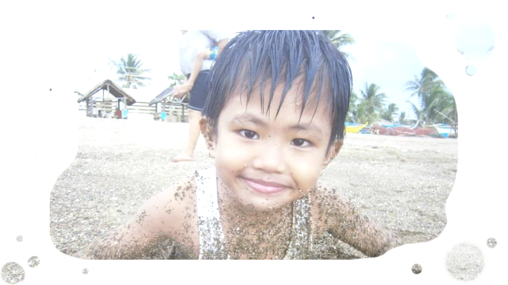

Ang personal na impormasyon ko,
tungkol sakin, at edad.
Ako si August John Reganit!
Labing apat na taong gulang ako.
Karaniwan akong nasisiyahan sa mga
bagay na nakatuon sa mga computer.
Tulad ng graphics designing, video editing, and etc!

Ang aking paniniwala sa Dioys.
Kahit na hindi ko pa nakita ang Diyos nang personal,
Naniniwala ako na totoo siya. Sigurado akong
"ginagamit" niya ang mga tao upang .
Subalit hindi lang napapansin ng mga tao.
at hindi siya totoo kung di ka maniniwala.
Hindi pinipilit ng Diyos ang sinuman, hindi pa lahat huli.